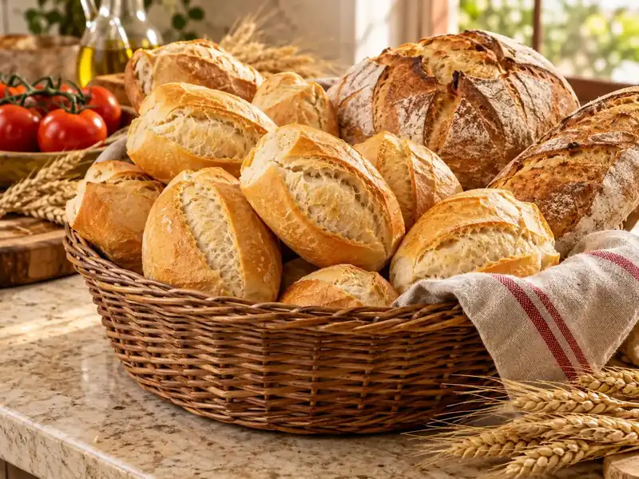
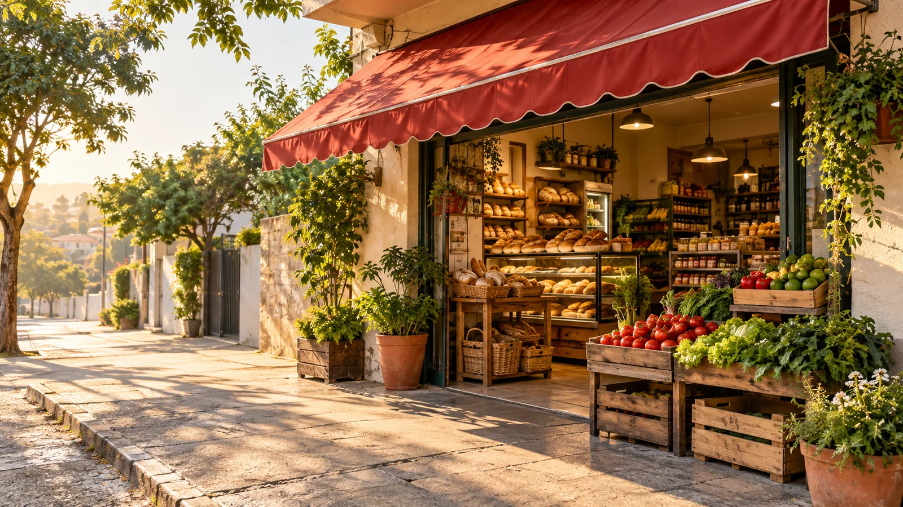
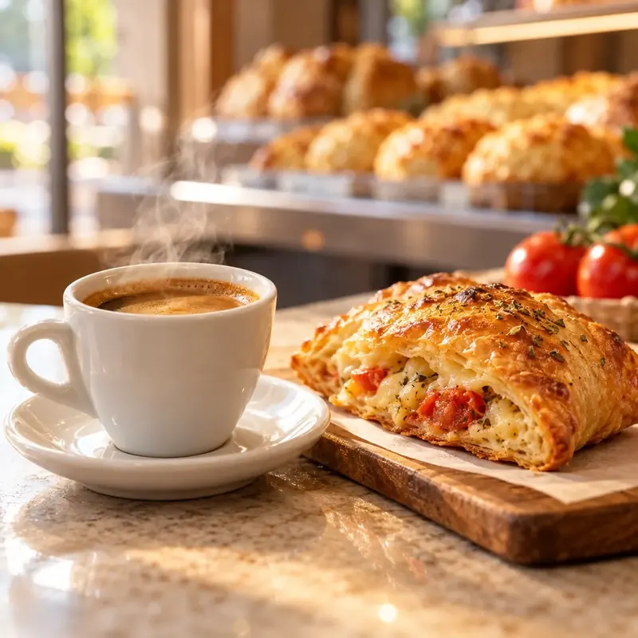

Padaria
Padaria para o café da manhã e o lanche da tarde.
Mercado e padaria de bairro na Rua Balaclava, 1365, em Santo André. Passe por aqui.
Seg a sáb, 07:00 às 20:00. Dom, 07:30 às 14:00. horário a confirmar

4,1 de 5 nota no Google Maps, em 560 avaliações
Desde 2009 CNPJ ativo em Santo André
Segunda a domingo horário no fim da página, a confirmar
Do café da manhã ao jantar, o básico da semana num lugar só.

Padaria para o café da manhã e o lanche da tarde.
Cortes para o almoço de todo dia.
O básico da despensa, organizado e à mão.
Frutas, legumes e verduras.
Exemplo para validarAqui entram as ofertas reais da loja, com preço, unidade e validade. Os cartões abaixo mostram como vão aparecer.
Preços fictícios, só para demonstrar o formato. Formas de pagamento: a confirmar com a loja.
O que os clientes mais destacam nas avaliações do Google Maps.
Está entre os assuntos mais citados pelos clientes, com elogios à padaria.
Elogiado nas avaliações por quem passa pela loja.
Limpeza e organização aparecem entre os pontos fortes lembrados.

O Hitamax fica na Rua Balaclava, no Jardim Santo Alberto, e tem CNPJ ativo em Santo André desde 2009.
Aqui entra a história da loja, contada por quem faz o Hitamax: como começou, quem está por trás e o que o bairro já viveu por aqui. Esse texto será escrito junto com o gerente.
| Segunda | 07:00 às 20:00 |
|---|---|
| Terça | 07:00 às 20:00 |
| Quarta | 07:00 às 20:00 |
| Quinta | 07:00 às 20:00 |
| Sexta | 07:00 às 20:00 |
| Sábado | 07:00 às 20:00 |
| Domingo | 07:30 às 14:00 |